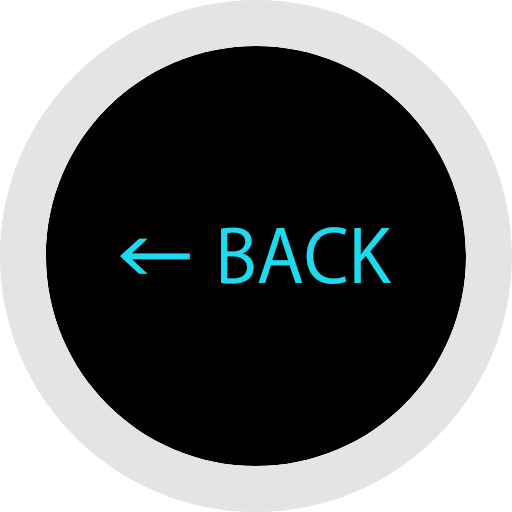

<ons-page ons-show="updateToolbar('showVR')" id="html/view_vr.html">

        


        <!-- 戻るボタンの挙動 -->
        <script>
        
         //変数に音源となるファイルの名前を指定します。この変数はMediaオブジェクトを生成する際に使用します。
         var sound = "atari.mp3";

         //Mediaオブジェクトを利用するためにここで変数宣言しておきます。この段階では「null」、すなわち中に何もない空の状態で宣言しておきます。
         var media = null;

        //Androidでは絶対パスを指定する必要があるため、そのパスを取得するための関数です。
         function getPath(){
             var str = location.pathname;
             var i = str.lastIndexOf('/');
             return str.substring(0,i+1);
         }

         //PhoneGapの読み込みが完了した際の「deviceready」イベント発生時にonDeviceReady()関数を呼び出すイベントを設定します。
         document.addEventListener("deviceready", onDeviceReady, false);

         function onDeviceReady(){
            //PhoneGapの読み込みが完了した際に「PhoneGapの読み込みが完了しました」と通知を出しています
            //alert("PhoneGapの読み込みが完了しました");
                /*効果音を再生するための「オブジェクト」を生成してそれぞれ変数から利用できるようにします。
                  第１引数のurl指定を「getPath() + src」とすることで音源となるファイルへのパスを示すとともに
                  第2、第３引数で再生成功•再生失敗時のコールバック関数を定義しています。*/
               media = new Media(getPath() + sound, onSuccess, onError);
        }

         if (typeof Windows != "undefined") {
             // Windowsストアアプリでalert関数を使用するための記述
             window.alert = function(s) {
                 new Windows.UI.Popups.MessageDialog(s).showAsync();
             }
         }

         //Mediaオブジェクトを生成する際の第２引数に設定した音声再生成功時のコールバック関数です
         function onSuccess() {
              console.log("playAudio():Audio Success");
         }

         //Mediaオブジェクトを生成する際の第３引数に設定した音声再生失敗時のコールバック関数です
         function onError(error) {
            alert('code: '    + error.code    + '\n' +
                  'message: ' + error.message + '\n');
         }        
        
        
        
        
        
                /* ボタンの数 */
                var objnum = 1;
                
                function clickHandler(e) {
                    console.log("LLV clic close");
                    obj1.setAttribute('visible', 'true');
                    setTimeout(image_reset,500);;
                }
                
                function image_reset() {
                    console.log("image reset");
                    obj1.setAttribute('visible', 'false');
                    history.back();
                }
                
                function init() {
                    /* クリックイベントハンドラの登録 */
                    var c = document.getElementsByClassName('obj');
                    console.log("クリックイベントハンドラの登録");
                    for (i = 0; i < c.length; i++) {
                        document.getElementById('obj' + i).addEventListener('click', clickHandler, false);
                    }
                }

        


    </script>

<!--
<body onload="init()">
-->

        <a-scene>
                <a-assets>
                        
                        
                        
                </a-assets>

                <!-- 戻るボタン（真上に配置） -->
            <a-image id="obj0" class="obj" src="#back_off" rotation="-90 0 0" height="1.5" width="1.5" visible="true"  position="0 -3.5 0"></a-image>
            <a-image id="obj1" class="obj" src="#back_on"  rotation="-90 0 0" height="1.5" width="1.5" visible="false" position="0 -3.5 0"></a-image>

            <!-- シーン切り替えオブジェクト -->
            <a-image   id="path0"
                      src="#star"
                 position="15.259 1.707 -14.77"
                 rotation="180 0 180"
                   height="1.5" width="1.5"
                  visible="true">
            </a-image>

            <a-sky id="pdc0"  visible="true"  src="vr/001_VR_papiko.jpg" rotation="0 -130 0"></a-sky>
            <a-sky id="pdc1"  visible="false" src="vr/002_VR_papiko.jpg" rotation="0 -130 0"></a-sky>

            <a-entity position="0 0 0">
                <a-entity camera look-controls wasd-controls rotation="0 0 0">
                    <a-entity position="0 0 -3"
                              geometry="primitive: ring; radiusOuter: 0.30; radiusInner: 0.20;"
                              material="color: cyan; shader: flat"
                                cursor="maxDistance: 30; fuse: true; timeout: 1500">
                                <a-animation begin="fusing" easing="ease-in" attribute="scale"fill="forwards" from="1 1 1" to="0.1 0.1 0.1" dur="1500"></a-animation>
                                <!-- <a-entity text="text: What's up" position="0 0 0"></a-entity> -->
                    </a-entity>
                </a-entity>
            </a-entity>
        </a-scene>
        
        <!-- シーン切り替え -->
        <script>
            var pdc0 = document.querySelector('#pdc0');
            var pdc1 = document.querySelector('#pdc1');

            var path0 = document.querySelector("#path0");

            document.querySelector('#path0').addEventListener('click', function() {
                path0.setAttribute('visible', 'false');
                pdc0.setAttribute('visible', 'false');
                pdc1.setAttribute('visible', 'true');
                console.log("Play Media");
                media.play();
            });
        </script>
</ons-page>
